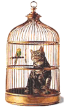

Mia dan Si Kitty

Mia adalah seorang anak yang baik hati. Karena keramahannya, ia mempunyai banyak teman di lingkungan rumah maupun sekolahnya. Mia adalah anak terkecil diantara 4 bersaudara. Setiap harinya, Mia dan kakak-kakaknya selalu diajari kedisiplinan dan budi pekerti oleh orangtuanya. Mia menyukai binatang. Sudah lama Mia ingin memelihara kucing, tetapi Ibunya melarang binatang peliharaan yang dipelihara dalam rumah karena membuat rumah kotor.
Suatu hari, Mia pergi menuju sekolahnya dengan berjalan kaki. Jarak antara rumah dan sekolahnya adalah 300 meter. Di tengah jalan, ia melihat seekor anak kucing terjatuh ke dalam selokan. Mia merasa kasihan dengan anak kucing itu. Lalu ia mengangkat anak kucing itu dari selokan dan menaruhnya di tempat yang aman kemudian Mia melanjutkan perjalanannya ke sekolah.
Kriiingg... Bel tanda waktu pulang berbunyi! Mia dan teman-temannya segera bergegas membereskan buku-bukunya dan segera keluar ruangan.
Di perjalanan pulang, Mia melihat anak kucing yang tadi pagi dilihatnya dalam selokan. Anak kucing itu mengeong-ngeong sambil terus mengikuti Mia. Mia tidak sadar ia diikuti oleh anak kucing itu. Sesampainya di rumah, ketika akan menutup pintu, Mia terkejut karena ada anak kucing mengeong keras. Mia baru sadar kalau anak kucing itu mengikutinya.
Mia mohon pada Ibunya, agar di izinkan memelihara kucing kecil itu. "Tidak boleh!, nanti hewan itu membuat kotor rumah", ujar Ibu Mia. "Tapi bu, kasihan kucing ini, tidak punya tempat tinggal dan tidak punya induk", kata Mia. Setelah beberapa saat, akhirnya Ibu membolehkan Mia memelihara kucing dengan syarat binatang itu tidak boleh ditelantarkan dan tidak mengotori rumah.

Sejak saat itu, Mia memelihara dan menyayangi anak kucing itu. Mia memberi nama anak kucing itu Kitty.
Beberapa bulan kemudian, Kitty tumbuh besar. Suatu hari, Mia melihat seekor burung kutilang yang tergeletak di halaman rumahnya. Ternyata burung kutilang itu terluka sayapnya dan tidak bisa terbang. Mia merawat burung itu dengan penuh kasih sayang. Si Kitty merasa cemburu karena merasa Mia menjadi lebih sayang pada burung kutilang daripadanya. Karena merasa tidak diperhatikan lagi, setiap Mia tidak ada, si Kitty selalu menakut-nakuti burung kutilang.
Setelah seminggu dirawat Mia, burung kutilang itu sembuh..
Beberapa hari kemudian, ketika Mia pulang dari sekolah, ia melihat pintu kandang burung kutilangnya terbuka dan ada bercak darah di bawah kandangnya. Mia berpikir jangan-jangan si Kitty memakan burung kutilangnya. Ketika melihat si Kitty, Mia jadi lebih curiga karena pada mulut si Kitty terdapat bercak darah. Saking kesalnya, Mia mengambil sapu dan mengejar si Kitty untuk dipukul. Kitty berlari dan masuk ke kolong tempat tidur.
Ketika melihat ke kolong, Mia terkejut karena ada seekor ular mati di bawah kolong tempat tidurnya. Mia sadar, si Kitty telah menyelamatkannya dengan menggigit ular tersebut. Mia baru ingat kalau ia lupa menutup pintu sangkar burungnya. Mia menyesal ketika ingat akan memukul si Kitty. Padahal kalau tidak ada si Kitty mungkin ular itu masih hidup dan bisa mencelakainya. Akhirnya Mia sadar akan kesalahannya dan memeluk si Kitty dengan erat.
Pesan Moral "Perlakukanlah binatang dengan baik agar tidak menyesal nantinya, karena binatang juga merupakan ciptaan Tuhan."